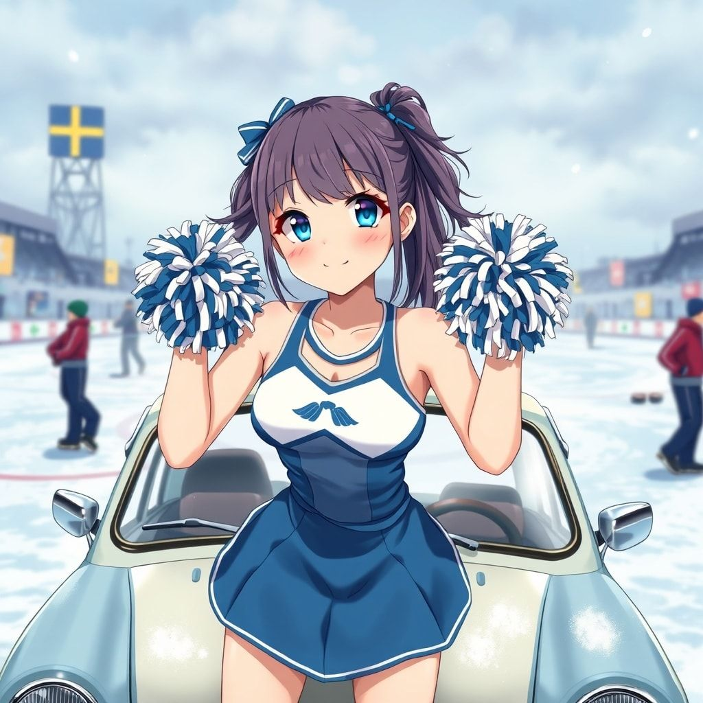
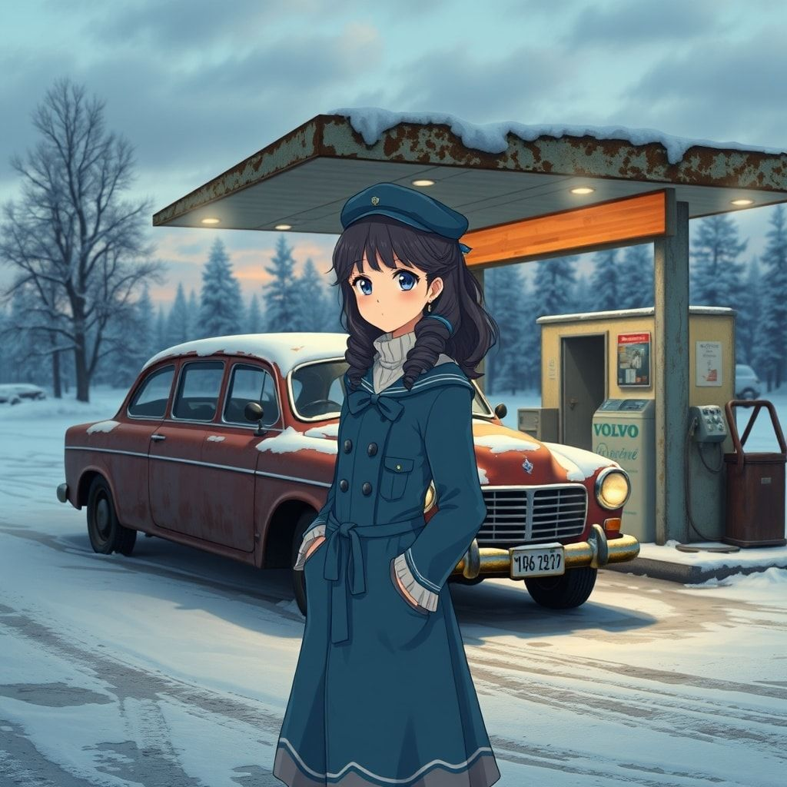
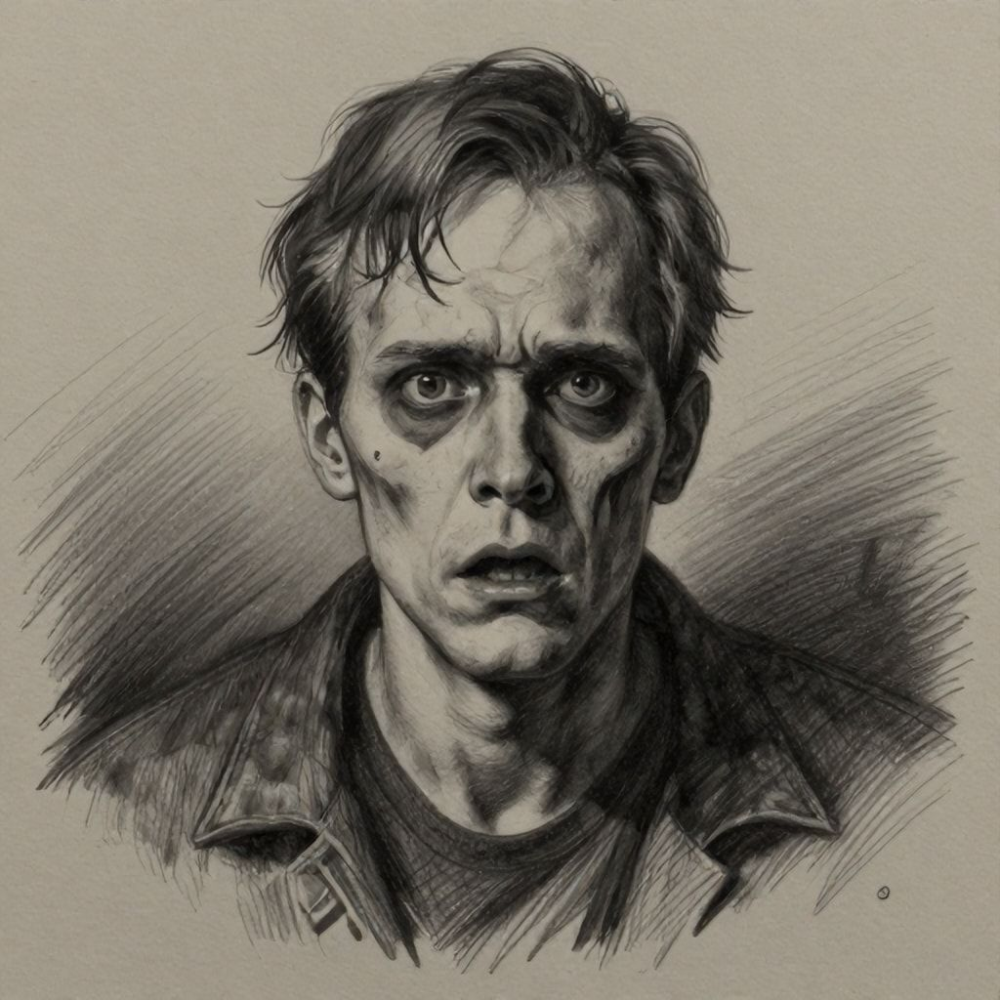
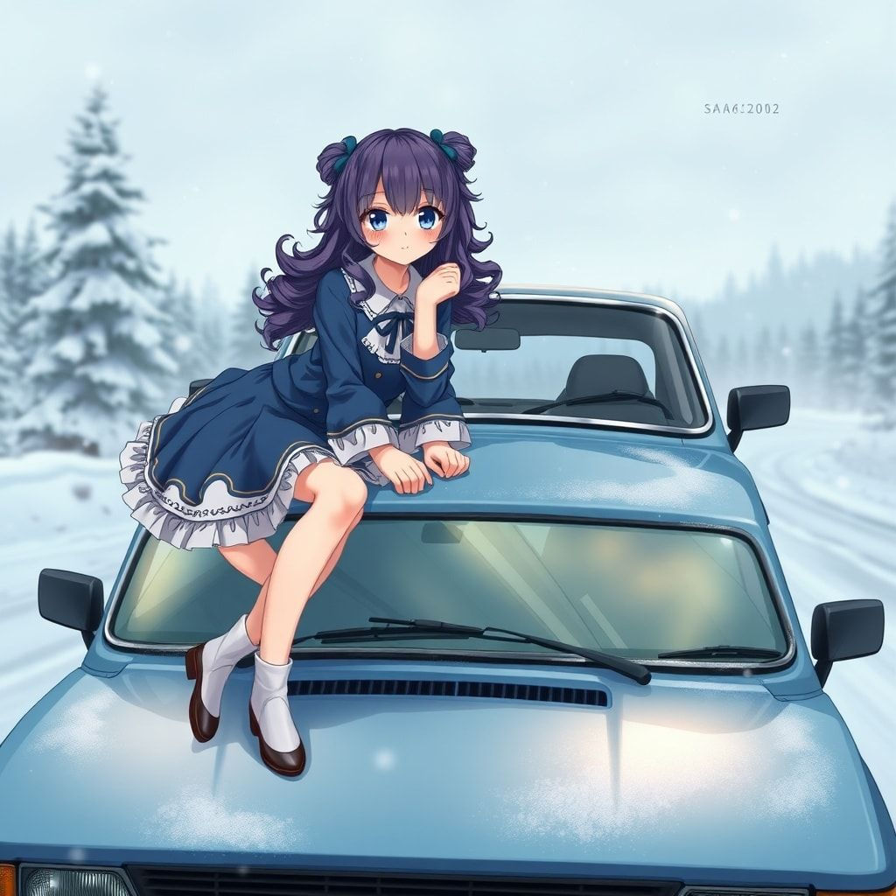
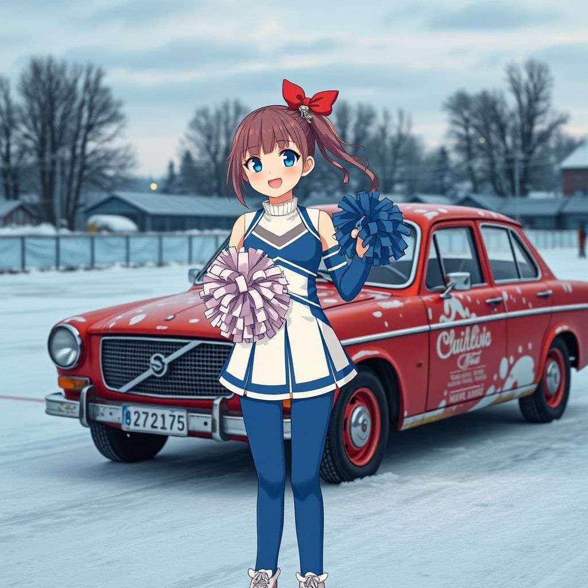
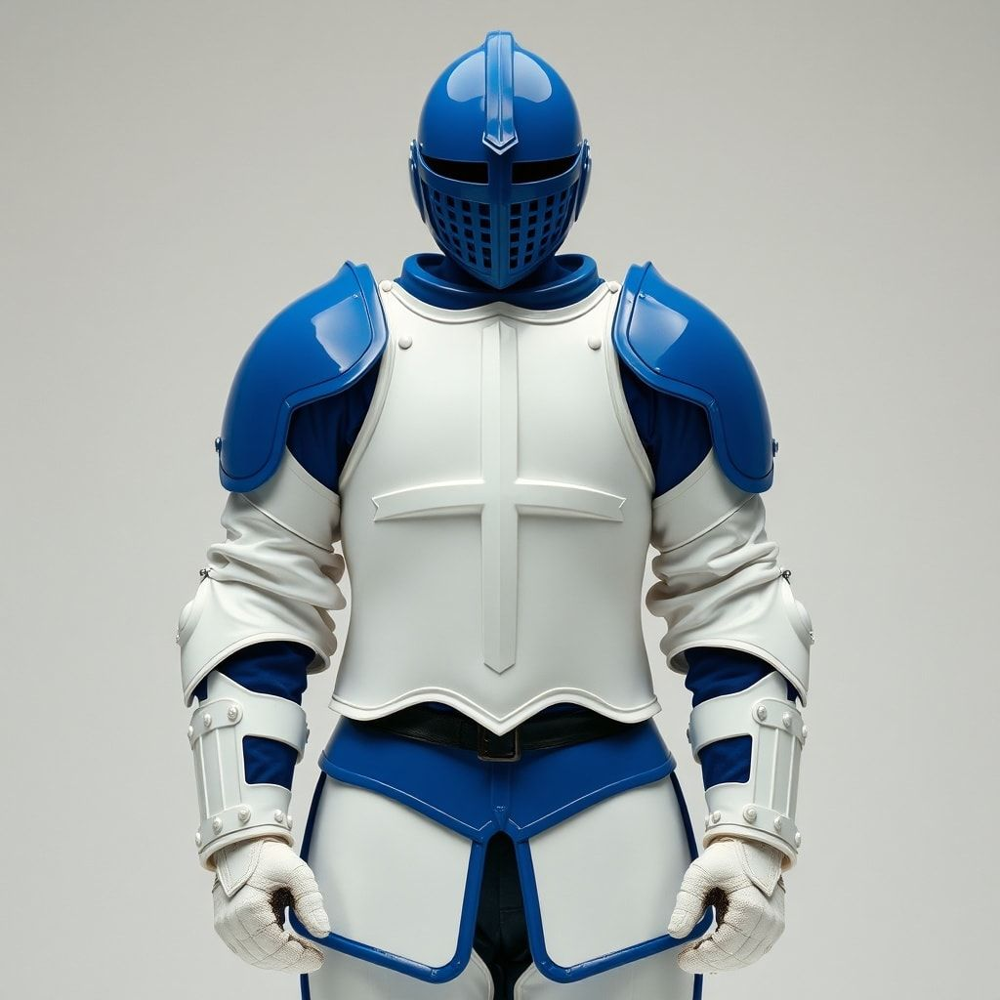

SPELA
CURLING
Spela Curling. Spela Curling. Spela Curling. Spela Curling. Spela Curling. Spela Curling.
Ett spel av Fisken med musik av Westenerz
— Övdalskia Tæwlingsbestemmælser
—
eftir Svenska Kærlingförbundet
Svenska Kærlingförbundets tæwlingsbestemmælser kompletterar reglu-bokunni. I di faul æn tæwlings-arrangør frångår bestemmælserna ska dä tydligt framgå i den information so lagen får i samband mäð tæwlingen.
1. Medlemskap. Føy at deltæ i SCF-tæwlinger måst spælaren tilhøyra æn kærling-førening so uppfyller kråvæ i SCF:s stadgar, og æv føreningen wara registrerad sum medlem i SCF.
2. Tæwlingslisens. Spælare so ska deltæ i tæwling anordnad æv SCF bøyʒ inneha giltig tæwlingslisens. Undantaget ær yngre juniorer so eʒ bøyʒ hawa lisens.
3. Definitsion tæwling. SCF og dess distriktsførbund arrangerar seriespel båðe føy damer og føy herrar. Di serier so arrangeras æv SCF ingår i wat so kallas det høyra seriespelet. Dæt ær Elit-serien Damer, Elit-serien Herrar og Division 1 føy damer sum Division 1 Norra, Mellersta og Sødra føy herrar.
3.1. Pågående tæwling. Pågående tæwling innebær æn tæwling æller deltæwling so pågår æn æller fleura dagar i følged, og so ær lokaliserad til æn ort æller område.
4. Offisiell status. Føy at tæwlingen ska uppnå offisiell SM-status og Riksidrottsförbundets mæstertecken ska kunna utdelas, måst tæwlingen omfattas æv minst twå olika klubbar og fyra deltagande lag.
5. Deltagarkrav.
5.1. Åldersgrænser. Yngre Junior: Spælare so fyller 16 år under det kalenderår so sæsongen inleds og yngre ræknas sum Yngre Junior. Junior: Spælare ræknas sum junior til og mäð den sæsong spælaren fyller 21 år. Senior (+51): Fra og mäð den sæsong diar spælaren fyller 51 år. Weteran (+65): Fra og mäð den sæsong diar spælaren fyller 65 år.
5.2. Klubbtillhørighet. Æn kærlar har rætt at wara medlem i fleura klubbar føy at tæna, men kan bara spæla aktivt i æn klubb i tæwlinger arrangeradæ æv SCF. Føy damer gæller utøver detta at di har møjlighet at represæntera æn klubb på damtæwlinger og æn annan klubb um di deltar i herrarnas seriespel.
5.3. Icke klubb-bindande tæwlinger. Føy anmælan til tæwlinger arrangeradæ æv SCF anses føljande inte klubb-bindande: Deltagande i tæwlinger fra div 2 og nedåt. Deltagande i inbydningstæwlinger. Deltagande i SM Figur, SM Mixed Dubbel, SM Mixed, SM Seniorer (+51), SM Weteraner samt junior- og rullstolstæwlinger.
5.5. Start på tre. Føy at inleda tæwling æller deltæwling måst lagit bestå av fyra spælare. Laget får starta på tre spælare i matcher so følger æftær den match æller matcher diar man spelat mäð fyra spælare. Wid tæwlinger anordnadæ æv SCF kan tillåtelse ges at starta på tre spælare wid extraordinære hændelser.
6. Spelform, kwalifisering og antal omgonger.
6.1. SM Yngre Juniorer. Spelform anpassas til antalet deltagande lag. SM føy yngre juniorer utgør inget kwal til internationellt spel. Antal omgonger: 6 + ewentuelt skilje-omgonger.
6.2. Junior-SM. Spelform: 14-16 lag: Trippel knockout i førsøken worifrån di 8 bæsta lagen går widare til kwartsfinaler mäð rak utslagning. 8-13 lag: Twå seedadæ grupper i seriespel. Di tre bæsta lagen i respektive grupp går widare til slutspel. Antal omgonger: 8 + ewentuelt skilje-omgonger.
6.3. SM Lag Damer. Fri anmælan til SM damer. Spelform anpassas utifran antal anmælda lag. Antal omgonger: 8 + ewentuelt skilje-omgonger.
6.4. SM Lag Herrar. SM lag herrar spelas mäð 16 deltagande lag. 13 til 15 lag kwalifiserar seg til SM wid DM. Trippel-knock i grundserie og rak utslagning i slutspel. Antal omgonger: 8 + ewentuelt skilje-omgonger.
6.5. SM Rullstolskærling. SM spelas mäð fyrmannalag, mäð tillåtelse at spela på tre. Antal omgonger: 8 + ewentuelt skilje-omgonger.
6.6. SM Seniorer (+51). Spelform anpassas æftær antal deltagande lag, antal tilgængeliga bånor og antal speldagar. Antal omgonger: 8 + ewentuelt skilje-omgonger.
6.7. SM Weteraner (+65). Spelform anpassas æftær antal deltagande lag, antal tilgængeliga bånor og antal speldagar. Antal omgonger: 8 + ewentuelt skilje-omgonger.
6.8. SM Mixed. Spelform anpassas til antal deltagande lag. Antal grupper beror på antal deltagande lag og antal speldagar. Antal omgonger: 8 + ewentuelt skilje-omgonger.
6.9. SM Mixed Dubbel. Spelform anpassas æftær antal deltagande lag, antal tilgængeliga bånor og antal speldagar. Antal omgonger: 8 + ewentuelt skilje-omgonger.
6.10. SM Mixed Dubbel Junior. Spelform anpassas æftær antal deltagande lag, antal tilgængeliga bånor og antal speldagar. Antal omgonger: 8 + ewentuelt skilje-omgonger.
6.11. SM Figur. SM Figur awgjøres øwer twå serier diar det bæsta sammanslagna resultatet winner i respektive klass.
6.12. Elitserien Damer. Elitserien damer spelas sum æn ænkelserie diar seriesegæren ær direkt-kwalifiserad føy final. Lag mäð plassering 2-3 spelar semifinal om den andra final-plassen. Antal omgonger: 8 + ewentuelt skilje-omgonger.
6.13. Elitserien Herrar. Ænkelserie mäð 12 lag som møtes i twå seriesammandrag mäð æftærføljande slutspel til wilket di fyra fræmsta lagen awanserar. Slutspel spelas i form æv rakt slutspel mäð semifinal, final og match om 3:je pris. Antal omgonger: 8 + ewentuelt skilje-omgonger.
6.14. Division 1 Herrar. Ænkelserie mäð 16 lag. Antal omgonger: 8 + ewentuelt skilje-omgonger.
7. Spel på tid.
7.1. Tidsbegrænsat spel. I det fall tidsbegrænsat spel anwændas finnes twå modeller so kan anwændas, den æna nær antal omgonger kan wariera, den andra nær antal omgonger ær førbestæmt.
7.2. Warierande antal omgonger. Wid tidsbegrænsat spel diar antal omgonger tilåts wariera ska æn signal ljuda æftær føljande tid: Wid spel i maksimalt 10 omgonger ska signalen ljuda æftær 1 time og 50 minutter. Wid spel i maksimalt 9 omgonger ska signalen ljuda æftær 1 time og 35 minutter. Wid spel i maksimalt 8 omgonger ska signalen ljuda æftær 1 time og 20 minutter.
7.3. Fast antal omgonger. Wid spel i 10 omgonger ska lagen tildelas 38 minutters betænketid. Wid spel i 8 omgonger ska lagen tildelas 30 minutter. I mixed dubbel tildelas lagen 22 minutter. I rullstolskærling tildelas lagen 38 minutter.
8. Poængberækning.
8.1. Seriespel. I seriespel tildelas laget twå poæng føy seger, ætt poæng føy oawgjørt og noll poæng føy førlust.
8.2. Plassering. Um twå æller fleura lag har samme poæng wid seriespel awgøres plasseringen æftær føljande: a) inbyrdes møte b) stæin-kwot c) antal wunna omgonger d) totalt antal poæng føy e) lottning.
9. No Tick. Æn stæin so wid utspel berører æller passerar delar æv centrum-linjen so befinner seg mellan hogg-linjer, bedømmes sum æn sentralt plasserad stæin. Æn sentralt plasserad stæin får inte sættas i rørelse æv æn stæin i gard-zunen innan den fjærde utspelade stænen i æn omgong har stannat.
10. Domare. Det åligger alltid Tæwlings-arrangøren at beslutta om nær domare ska wara på plass. Æn domares beslut ska respekteras.
11. Isskøtsel. Isen ska wara jæmn og i gott skick. Skador på isen ska åtgærdas so snart sum møjligt.
12. Reserw. Æn reserw ær æn spælare so inte ær ordinarie spælare i laget men so kan ærsætta æn ordinarie spælare um denne inte kan deltæ. Reserw ska anmælas til tæwlings-ledningen innan matchen bøyʒar. Bara æn reserw kan anwændas under æn og samme match.
13. Coach. Æn coach får befinnas wid sidan om bånan under pågående match. Coach får kommunicera mäð sitt lag under pågående match, men får inte støra motstandar-laget.
14. Time-Out. Wart lag har rætt til æn time-out per match. Time-out får wara maksimum 60 sekunder. Time-out begæres æv lagets skip æller wice-skip. Under time-out får laget rådgøra mäð sin coach.
15. Lagnamn. Lagnamn ska registreras wid anmælan og får inte ændras under pågående tæwling.
16. Utrustning. All utrustning ska wara godkænd æv SCF. Stæinar ska hawa æn førening unik og synlig markering.
17. Represæntation. Spælare får represæntera bara æn klubb i nationella tæwlinger.
18. Anmælan. Anmælan ska wara tæwlings-arrangøren tilhanda sennast den dag so anges i inbydan. Æftær-anmælan kan tillåtas mot ækstra awgift.
19. Friplasser. Friplasser førdelas æv SCF:s Tæwlings-utskott.
20. Wakans. Um æn plass i æn tæwling blær wakant førdelas den æftær fastställda regler.
21. Protokoll. Protokoll ska føras øwer alla matcher. Protokollet ska undertecknas æv båðe lagen æftær matchen.
22. Træning infør tæwlingens start. Lag ska ges møjlighet til træning innan tæwlingen startar.
23. Træning innan match i grundspel. Wart lag har rætt til wiss tid føy uppwærmning innan match.
24. Træning infør slutspel. Di lag so går til slutspel ska ges træningstillfælle innan slutspelen bøyʒar.
25. Træning infør match i slutspel. Lag i slutspel har rætt til uppwærmning innan match.
26. Walk Ower. Um ætt lag inte infinnær seg til match innan 15 minutter æftær utsatt tid, wunnær motstandar-laget matchen mäð Walk Ower. Resultatet wid Walk Ower registreras sum W-O.
27. Stæinfærg i grundserie. Wid førra matchen i æn grundserie lottas stæinfærg. I føljande matcher alternerar stæinfærg.
28. Teæ-dragning. Teæ-dragning ska genomføras innan tæwlingen bøyʒar føy at awgøra wilka lag so får wælja stæinfærg i førra match.
29. Ranking infør slutspel. Grupp-segrare rankas høgst infør slutspel.
30. Slutspel. Slutspel spelas i form æv utslagning.
31. Medaljer. Medaljer utdelas til lag so plasserar seg på pris-pallens platser.
32. Øwærtærelser. Øwærtærelser mot diæsæ bestemmælser kan medføra bestraffning.
Johan
Nygren
"Vi vet var ni sover."
"Man ska inte måla kycklingen blå innan den har dansat."
"Inte förty att væðja ip dier, um du int har bænat."
Daniel
Berggren
"Fem stenar. Fem öden."
"Även en stannad klocka har rätt två gånger om dagen."
"Alla hattar, ingen boskap, men mycket sås."

Trabanten
Den går på luft och vilja. Och tvåtakt.
"Sadeln skaver bara om hästen är död."
Victor
Martinsson
"Kasta inte bävern i sågverket."
"Ät inte gul snö om du inte har bråttom."
"Wænn byøðin so kaller, ska du int svara."

Norrland
Långt bortom polcirkeln. Där vägarna aldrig tar slut.
Enligt årsredovisningen (bilaga fyra, punkt två) som jag påbörjade i ett tillstånd av elektrolytrubbning har vi implementerat (men ej genomfört) kvalitetssäkringen av curlingstenens nervbanor.
"Ropa inte hej förrän du är över bäcken med yxan i foten."
"Ung som gammal, so bråðaðu man ropaðe 'stop'."

Johan
Järvenson
"Den som kastar sist, kastar bäst."
"Man kan inte göra omelett utan att knäcka ägg."
"Grannen har alltid grönsakslandet närmast staketet."
Bettan
Amazonen glömmer aldrig. Den bara rostar långsammare.
"Den som gräver en grop åt andra, faller ofta själv i rabatten."
Ture
Rodling
"Sova kan ni göra när ni är döda, pöjkar."
Isvaktaren
Hon sopar rent. Alltid.
Implementera.
Implementera inte.
Slemhinneproblem i protokollet.
Stenen glider mot avgrunden.
"Man ska inte gråta över spilld mjölk när grannen har bränt hela ladan."

Wildcard
Man vet aldrig vad som döljer sig i skuggorna.
Och när vi (jag och de andra, om det nu fanns andra, vilket protokollet varken bekräftar eller dementerar) stod där i korridoren (som egentligen var en sopa, eller möjligen en sten) så insåg vi att årsredovisningen redan hade skrivit sig själv.
"Kasta inte pärlor åt svinen, de kan trilla i diket."

Meddelanden
Klockan 03:14. Telefonen lyste upp ansiktet med ett sjukt sken.
"Man ska inte döpa bävern innan den har simmat."
"Fiskar so sova, so fænger aungin."

Rustningen
Blått och vitt. Amatörföreningens färger.
Manager
Hon vakar. Hon ser. Hon soper.
Hjälmen
Skydd mot stenarna. Skydd mot verkligheten.
"Morgonstund har guld i mun, men kvällen har silver i skägget."
"Skoða igæð som du vil, men tjueðer skuða aungin."
"Tjueðer ska du byða, men int jærna."
"Bättre en fågel i handen än tio på taket som skitar ner."
Spela Curling
Slänga kvasten upp i luften
Spela slagning blejsa stenen
Jättearg och jätteledsen
Smälla kvasten tappa modet
Rakt igenom rakt igenom
Oj den gliider
Kasta stenar in i boet men den gliider
Spela curling spela curling
Slänga kvasten upp i luften
Spela slagning blejsa stenen
Jättearg och jätteledsen
Smälla kvasten tappa modet
Rakt igenom rakt igenom
Oj den gliider
Kasta stenar in i boet men den gliider
Spela curling spela curling